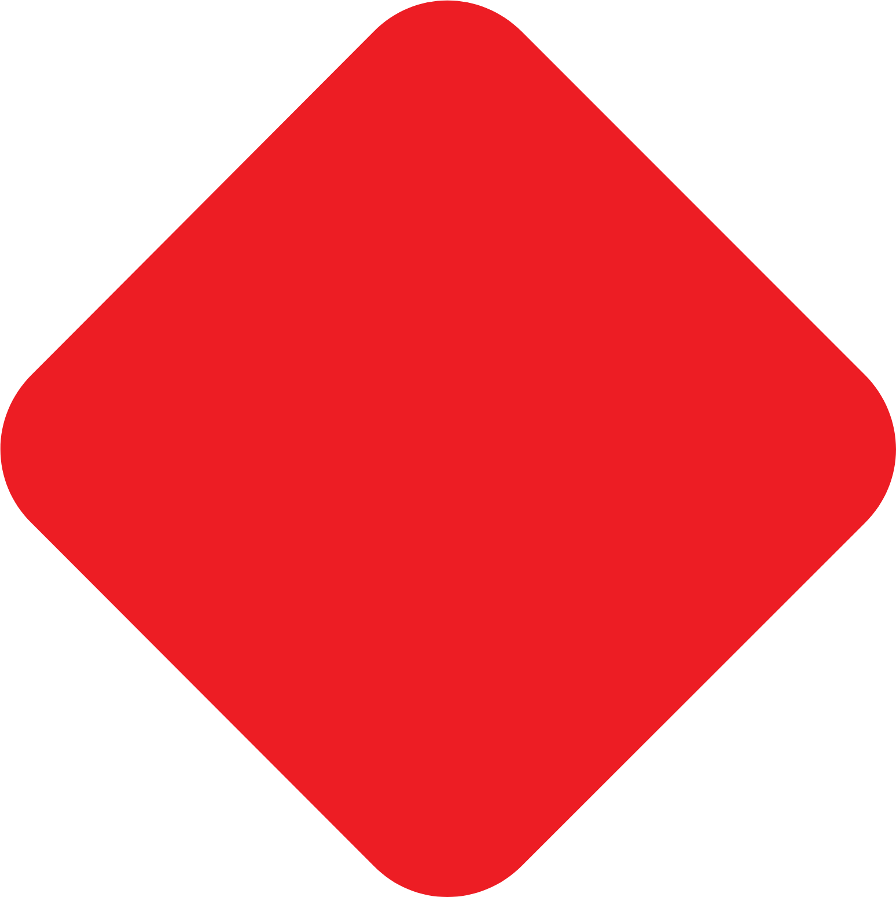
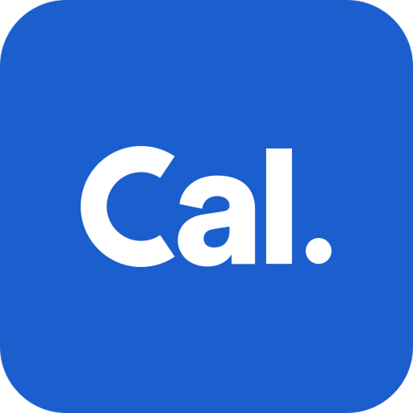
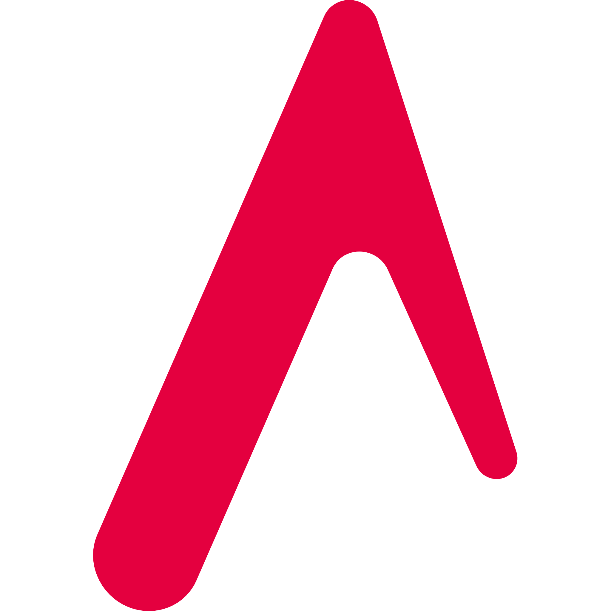
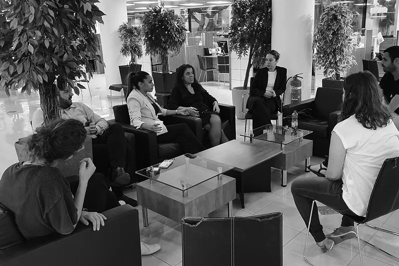
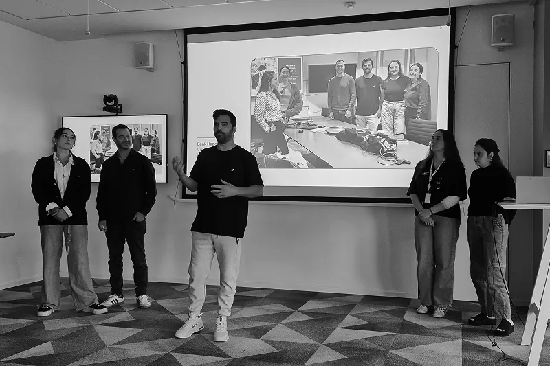
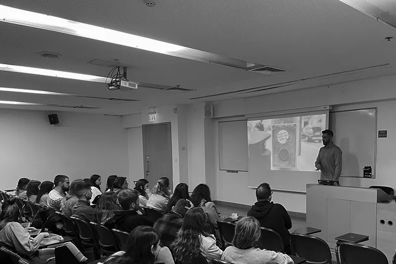

My job is to make the designers on my team successful, and that is how I measure myself. I do it from inside the business rather than beside it, close enough to the numbers and the consequences that design arrives with an argument and not a preference.
I managed seven designers across Loans, Credit Cards, Mortgages, Deposits and a Design Centre of Excellence, four of those lines running at once. Each had its own building, its own product managers, its own Tribe Lead, closer to five companies than to five teams. One design language and one team ran through all five, which is what kept the experience consistent.
A quarter opens where the bank sets its objectives and its budgets, and closes in front of C-level. I am in both rooms, and in the planning between them, asking for what the design work will need rather than inheriting a plan. What came out of it is a direct line, open in both directions.
A requirement arrives and I go to the business logic and the data first. When that is thin I ask for a customer journey study, and for car loans I stood in dealerships myself. Then a rough concept, fast, unfinished on purpose so the conversation starts early.
The vision is set on day one and arrives in pieces. The MVP proves itself before the vision grows on top of it, and everything after ships small, because a big release hides which change did it. We measure everything, even the microcopy on a button. A fix too big for the quarter gets named, not quietly dropped, and goes back on the next plan.



From a business objective in a quarterly planning room to the code that ships it, I work the whole length of it. Design systems, AI in the process, hands in the file, hands in the code. The range is the point: it is what lets me lead people who each work at a different point on that line.
A blank frame is the slowest part of any project, so I use AI to get directions and rough UI on the table fast and the conversation starts on something real. Then the designers take it. The precision that makes a screen feel finished is human, and it is the part I protect.
Branches, diffs, pull requests, and Claude Code open most days. I read code the way I read a Figma file, and that is what closes the distance between a design and the thing that actually ships. This site is where I keep the habit sharp. I designed it, built it and deployed it.
Variables, component APIs, the plugin and MCP ecosystem. I never stopped opening the file myself, to show an idea or to fix something rather than describe it, and components I built were adopted into the bank's design system, which is what a living system is for. I also built my own from scratch, as a side project.

I actively mentor junior and aspiring product designers, helping them navigate the industry, accelerate their growth, and land their first real role.

Industry mentor for the Google & Reichman University UX grad project, built on a real Bank Hapoalim challenge. One graduate joined my team; their concept now lives in our credit card workflow.

Guest lecturer, Academic College of Tel Aviv-Yaffo, "Psychology & UX." I share my path from junior designer to management, the learning curves and what actually sustains leadership.